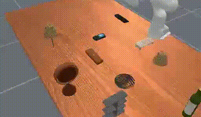
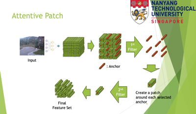

Motion Planning Libraries
Ongoing
Motion planning stacks across multiple robot systems. The flagship Autolife-Planning
targets millisecond-level CPU planning with
OMPL +
VAMP,
covering ASAP, subgroup, whole-body, and constrained planning to push past GPU-heavy baselines like cuRobo.
Earlier system-specific stacks cover sub-100ms whole-body planning on the Fetch, bimanual Franka, and Fetch.
TyGrit
Ongoing
TyGrit is a unified playground for mobile manipulation. We are implementing
model-based, model-free, reinforcement learning, and imitation learning baselines
within a single framework, and will generate and release accompanying datasets.
Everything in TyGrit is designed end-to-end for mobile manipulation (MoMa).

Object-Centric Policy
Ongoing
We are exploring skill representations that enable data-efficient and general policies.
We represent tasks via the objects themselves, decoupled from robot and camera viewpoints,
making the policy agnostic to view changes, appearance/illumination changes, embodiment changes, etc.

Uniform Framework for Data Gathering and Behavior Cloning
Completed
A comprehensive framework for robot imitation learning that supports multiple data gathering interfaces
(GELLO, VR controller, joint stick, and hand tracking) and various robot embodiments
(Fetch, Kinova Gen3, Franka FR3). The behavior cloning component implements state-of-the-art
approaches including ACT and diffusion policy, enabling efficient transfer of human demonstrations
to robotic systems.

Digital Twin and 3D Reconstruction
Completed
Tooling for building realistic indoor digital twins for robotics research.
The Gaussian Splatting Toolkit provides an enhanced Gaussian Splatting framework
for indoor 3D mesh reconstruction, incorporating novel geometric
constraints for improved accuracy, with comprehensive documentation and easy-to-use
interfaces. The RLS Digital Twin Platform builds on this stack to deliver a full
digital twin of the lab environment, serving as the foundation for student projects
in CS6244 Advanced Topics in Robotics at NUS and broader mobile manipulation research.

Final Year Project: Study of Local Descriptors for Robust Visual
Place Recognition
Completed
Research on improving Visual Place Recognition (VPR) systems through
enhanced local descriptor selection. Developed novel descriptor
selection methods using semantic segmentation and high-pass filters,
creating a comprehensive evaluation framework for VPR performance.